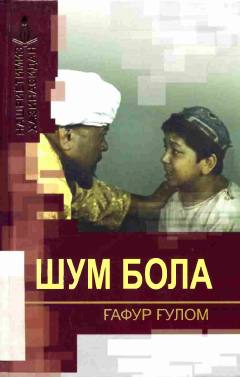

SBSho'x va topqir bolaning qiziqarli va ibratli sarguzashtlari aks etgan mashhur o'zbek qissasi.
Ushbu asar o'zbek adabiyotining yirik namoyandasi Gʻafur Gʻulom qalamiga mansub bo'lib, unda sho'x va qiziqchi bolaning sarguzashtlari tasvirlanadi. Kitobda muallifning turli qissalari va hikoyalari jamlangan bo'lib, ular o'quvchini hayotiy voqealar ustida mushohada yuritishga chorlaydi.